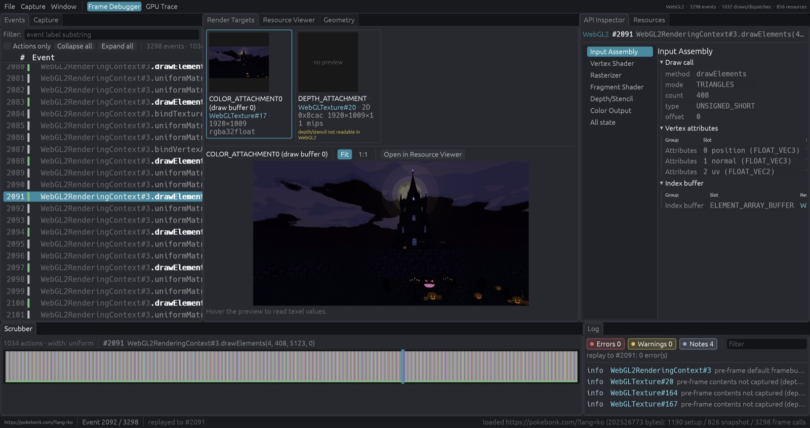
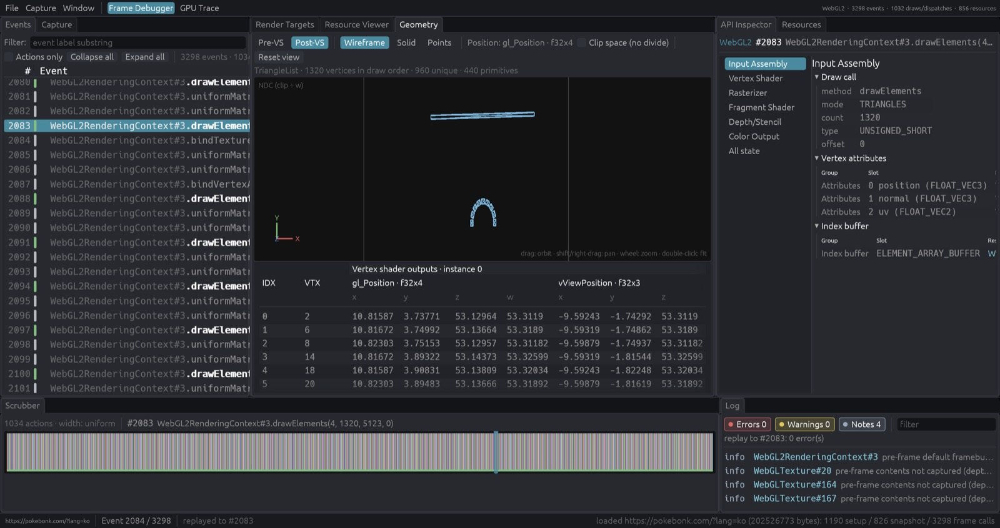
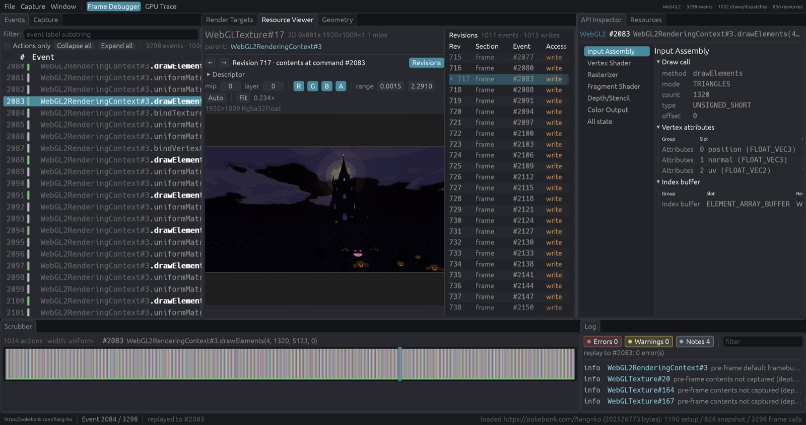
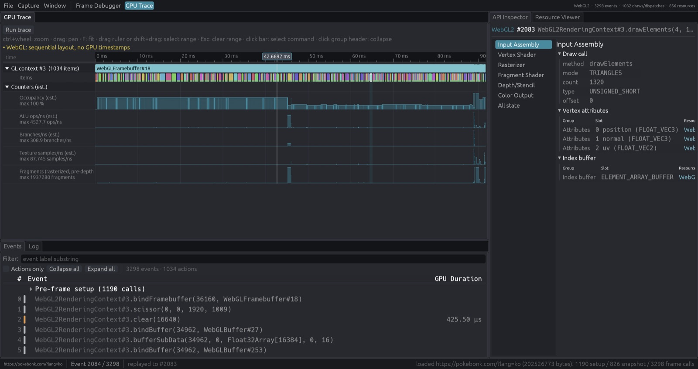

webgd
An in-browser frame debugger and GPU trace for web pages that render with WebGL2 or WebGPU.
Chrome Web Store listing is not ready yet. Until then, build from source and load the extension unpacked.
What it is
webgd records every WebGL2 or WebGPU call a page makes in one frame, then lets you step through that frame command by command, inspecting render targets, pipeline state, geometry and resource contents at each point.
A Chrome extension hooks the page's graphics APIs and captures one requestAnimationFrame frame, along with a snapshot of GPU resource contents at the start of that frame. The webgd tab, a Rust/WASM app, replays the frame on its own WebGL2 context or GPU device up to whichever command you select.
It runs locally in your browser. Captures stay on your machine unless you save them as a .webgd file.
Features
Frame capture and page overlay
Records every WebGL2/WebGPU call in one frame, plus the GPU resource contents at frame start. A small overlay on the page shows whether it can be captured, with FPS and frame counters.
Events and Scrubber
Calls are grouped by render and compute passes, debug groups and page markers, with a text filter and an actions-only view. The Scrubber lays the frame out as a strip: click, drag or step with the arrow keys.
API Inspector and Render Targets
Selecting a command replays the frame up to it. Render Targets shows the bound attachments with a texel readout, and the API Inspector walks the pipeline stage by stage with links to bound resources.
Geometry
Shows the selected draw's vertices in 3D, before (Pre-VS) and after (Post-VS) the vertex shader, as wireframe, solid or points, next to a vertex table grouped by buffer slot.
Resources with revision history
Lists every buffer, texture, shader, pipeline, sampler and bind group, and shows its contents at the replayed point. The Revisions panel lists each create, write, read and destroy; click one to jump to that command.
GPU Trace with estimated counters
A timeline of passes, debug markers and draws per queue, timed on webgd's replay device. Occupancy, ALU, branch and texture-sample rows are estimates from a static shader cost model and are labelled “(est.)”.
Captured from a real game
Sample: a three.js WebGL2 game at pokebonk.com, captured and replayed with webgd.









How it works
Install
Build with
cargo xtask build, then load theextension/folder unpacked fromchrome://extensionswith Developer mode on.Open the page
Open (or reload) a page that renders with WebGL2 or WebGPU. The overlay reads “Webgd capturable” once the page is hooked.
Capture
Click the webgd toolbar button to open the webgd tab, then pick the page from the Capture menu. webgd records the next frame.
Inspect and trace
Select events to replay up to them, browse resources and geometry, or switch to GPU Trace and run a trace. Save the capture as
.webgdto open it later.
Status
Chrome only (121 or newer). Supports WebGL2 and WebGPU; WebGL1 pages are detected but not supported. Counters are estimates, and timings are measured on webgd's replay, not the page's own submission. See the known limitations.